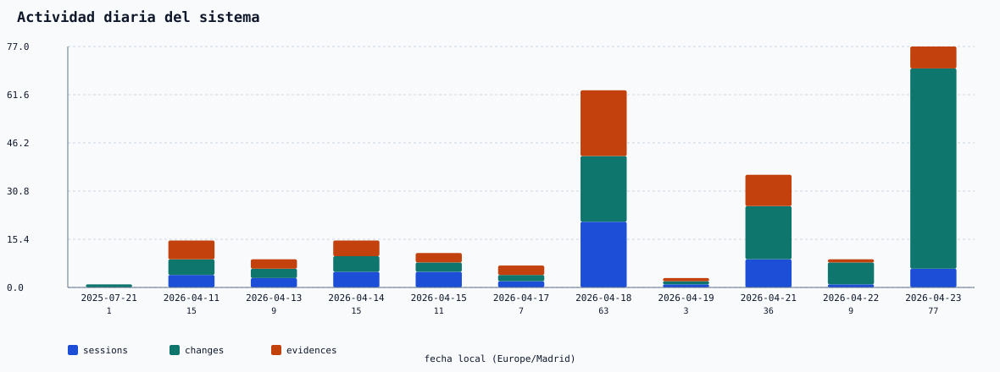
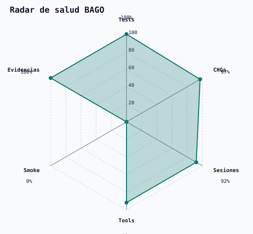
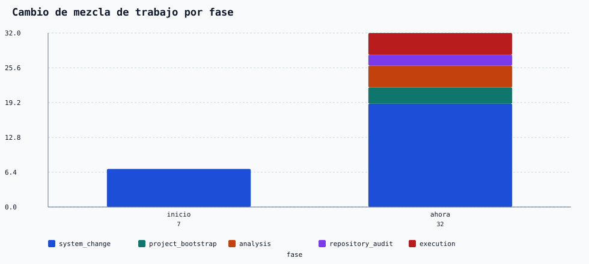
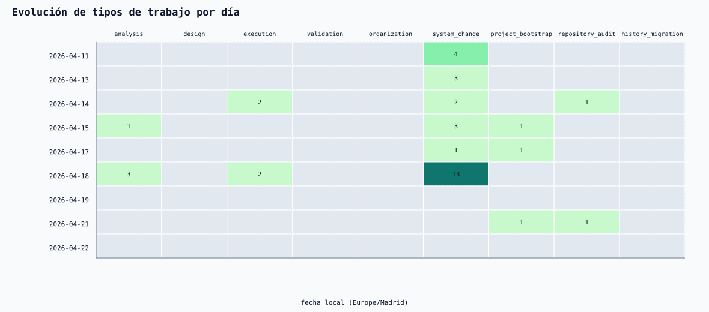
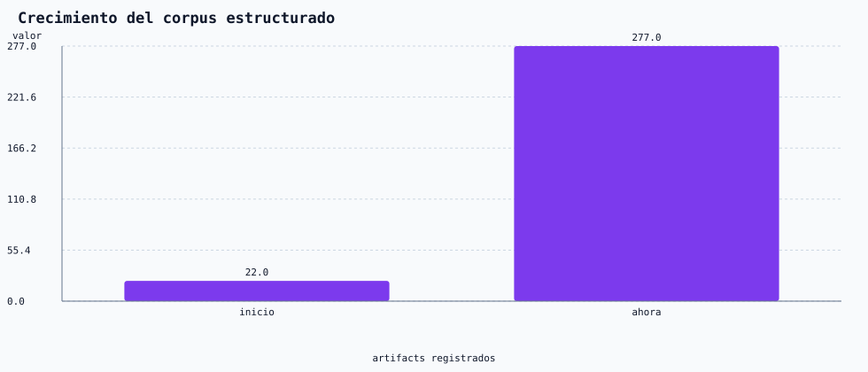
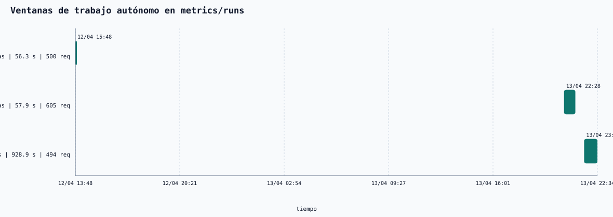

Comparación entre el arranque de corrección/migración y el estado actual operativo. Generado desde `state/` y `state/metrics/runs/`.
BAGO se enfocaba en system_change, preservación canónica, migración histórica y validación documental. La variedad funcional era baja y el trabajo era esencialmente de consolidación.
system_change: 7 | project_bootstrap: 0 | analysis: 0 | repository_audit: 0 | execution: 0
El sistema trabaja de forma más madura: bootstrap del repo, análisis, auditoría, ejecución y cierre de ciclos con evidencias y estado vivo actualizado.
system_change: 19 | project_bootstrap: 3 | analysis: 4 | repository_audit: 2 | execution: 6
Si la cifra es 0, no hay registros fechados hoy en el reloj local del entorno.



| Fase | system_change | project_bootstrap | analysis | repository_audit | execution | Total |
|---|---|---|---|---|---|---|
| Inicio | 7 | 0 | 0 | 0 | 0 | 7 |
| Ahora | 19 | 3 | 4 | 2 | 6 | 50 |

| Día | analysis | design | execution | validation | organization | system_change | project_bootstrap | repository_audit | history_migration |
|---|---|---|---|---|---|---|---|---|---|
| 2025-07-21 | 0 | 0 | 0 | 0 | 0 | 0 | 0 | 0 | 0 |
| 2025-07-28 | 0 | 0 | 0 | 0 | 0 | 0 | 0 | 0 | 0 |
| 2026-04-11 | 0 | 0 | 0 | 0 | 0 | 4 | 0 | 0 | 0 |
| 2026-04-13 | 0 | 0 | 0 | 0 | 0 | 3 | 0 | 0 | 0 |
| 2026-04-14 | 0 | 0 | 2 | 0 | 0 | 2 | 0 | 1 | 0 |
| 2026-04-15 | 1 | 0 | 0 | 0 | 0 | 3 | 1 | 0 | 0 |
| 2026-04-17 | 0 | 0 | 0 | 0 | 0 | 1 | 1 | 0 | 0 |
| 2026-04-18 | 3 | 0 | 2 | 0 | 0 | 13 | 0 | 0 | 0 |
| 2026-04-19 | 0 | 0 | 0 | 0 | 0 | 0 | 0 | 0 | 0 |
| 2026-04-21 | 0 | 0 | 0 | 0 | 0 | 0 | 1 | 1 | 0 |
| 2026-04-22 | 0 | 0 | 0 | 0 | 0 | 0 | 0 | 0 | 0 |
| 2026-04-23 | 0 | 0 | 2 | 0 | 0 | 0 | 0 | 0 | 0 |


| Bloque | Inicio local | Fin local | Duración activa | Solicitudes | Corridas |
|---|---|---|---|---|---|
| bloque 1 | 12/04 15:48 | 12/04 15:49 | 56.318s | 500 | 2 |
| bloque 2 | 13/04 22:28 | 13/04 23:11 | 57.897s | 605 | 7 |
| bloque 3 | 13/04 23:44 | 14/04 00:34 | 928.868s | 494 | 8 |
flowchart LR A["Corrección y migración"] --> B["Endurecimiento estructural"] B --> C["Performance y release"] C --> D["Bootstrap repo-first"] D --> E["Evaluación y reconstrucción"] E --> F["Operación estable"]
stateDiagram-v2 [*] --> Session Session --> Change Change --> Evidence Evidence --> GlobalState GlobalState --> NextSession NextSession --> Session
pass · 154 workers.